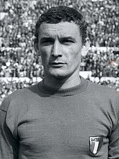

Gerd MÜLLER - 1970
- Après avoir remporté le Soulier d'Or de la Coupe du Monde, il gagne le
Ballon d'Or
Gerd Muller
devient à 25 ans le premier Allemand à recevoir le titre de Ballon d'or.
Nationalité : Allemande
Né le : 3 novembre 1945, à Nördlingen (ALL)
Taille : 1,74
Poids : 76 kg
Poste : attaquant
Clubs : TSV Nördlingen (1954-1964), Bayern Munich (1964-1979), Fort Lauderdale Strickers (1979-1981), Smith Brothers Lounge Fort Lauderdale (1981-1982).
Palmarès de joueur :Coupe du monde 1974 ; Championnat d'Europe des nations 1972 ; Coupe intercontinentale des clubs 1976 ; Coupe des champions 1974, 1975 et 1976 ; Coupe des Coupes 1967 ; Championnat de RFA 1969, 1972, 1973 et 1974 ; Coupe de RFA 1966, 1967, 1969 et 1971 ; Soulier d'Or européen 1970 (38) et 1972 (40) ; meilleur buteur du Mondial 1970 (10 buts) ; meilleur buteur sur l'ensemble des phases finales de Coupes du monde (14 buts) ; meilleur buteur du Championnat de RFA 1967 (28), 1969 (30), 1970 (38), 1972 (40), 1973 (36), 1974 (30) et 1978 (24).
Bilan en club : 685 matchs, 603 buts
Bilan en équipe nationale : 62 sélections A, 68 buts (1966-1974)
Bilan en phase finale de Coupe du monde : 2 participations (1er en 1974 ; 3e en 1970), 13 matches, 14 buts (1970-1974).
Palmarès Ballon d'Or : vainqueur en 1970 et (2e en 1972 ; 3e en 1969 et 1973)
Classement du Ballon d’Or France Football 1970 :
Gerd Müller (RFA / Bayern Munich),
77 pts.
Bobby Moore (Angleterre / West Ham),
69 pts.

Luigi Riva (Italie / Cagliari),
65 pts.
Retour à l'accueil
 Gerd MÜLLER - 1970
Gerd MÜLLER - 1970